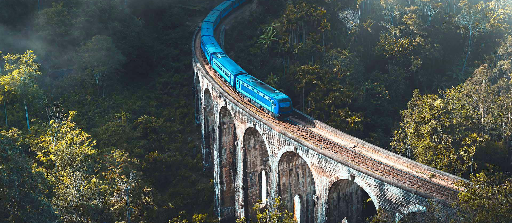
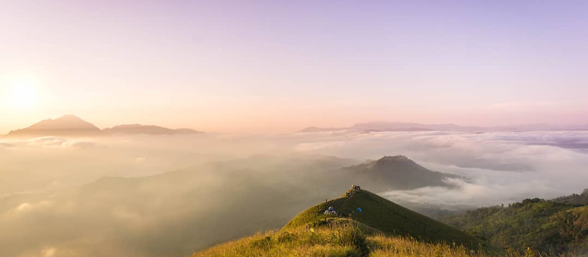

Badulla is located in the southeast of Kandy, almost encircled by the Badulu Oya River, about 680 m (2,230 ft) above sea level and is surrounded by tea plantations. The city is overshadowed by the Namunukula range of mountains (highest peak 2,016 m (6,614 ft) above sea level). It was a base of a pre-colonial Sinhalese local prince (regional king) who ruled the area under the main King in Kandy before it became part of the British Empire. Later, it became one of the provincial administrative hubs of the British rulers. The city was the terminus of upcountry railway line built by the British in order to take mainly tea plantation products to Colombo.
Badulla is a major player in the Sri Lankan tea industry. Badulla has a modest economy largely dependent on plantation crops. Apart from this, most agriculture is of the subsistence variety, and there is little industry. The world-renowned district of Uva is a very different area from the other tea districts. It is a champagne tea area. Uva experiences a very individual and different quality season. AT Uva area factories produce a wind rang of whole and small-leaf grades as well as CTC tea varieties.

Ella is a famous destinations for every one visiting Sri Lanka. This awesome mountain village, with a view, is the perfect base for relaxing, whilst also offering lots of fantastic walks through tea plantations to temples and waterfalls. Ella with its perfect climate soothes your mind and makes your day to day anxieties feel a world away. We are ready to give you the best train tour in Sri Lanka on a 1st class observation compartment.
Each seeker follows a unique path of transformation on their visionary journey into a meaningful life experience. Nature trekking, rainforest therapy and mountain hiking in Sri Lanka offers an invigorating expedition into deep nurture and healing. Go off-the-beaten trails on these unhurried walks, wander into the unknown, surrender to a deep spiritual contemplation, get lost, as nature becomes your inner compass on a transformational hike into ultimate self-discovery. Volunteer with an eco-tourism initiative and engage with leading nature conservation projects. The natural seeker experience is a transformative immersion into the healing power of nature.
Flying Ravana Adventure park is one of a kind experience available in Sri Lanka, located amidst the luscious green estates of Ella. Completed with its pride, Sri Lanka's first-ever Mega zip-line. The two-wire zip-line stretches for more than half a kilometer, slides at 80kmph, and offers a bird's-eye view of the beautiful hills of the island. The adventure park is exclusively designed for adventure enthusiasts and adrenaline junkies who prefer a not-so-ordinary hillside experience, offering ATV/quad bike rides, Abseiling, Archery, and Air rifling for a gripping outdoor experience. Flying Ravana is truly, Ella in all its glory.